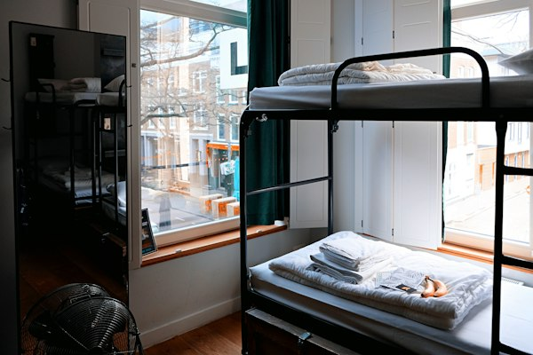
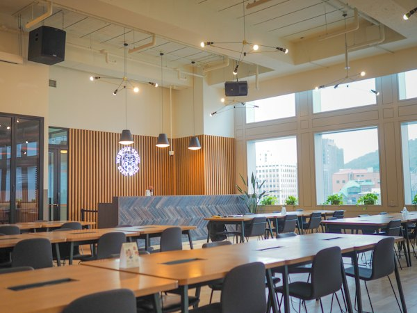
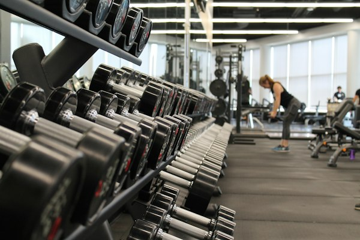

올바른 공직가치 확립, AI·디지털 행정 전문성 배양, 글로벌 외교 거버넌스까지—
국가공무원인재개발원이 100만 대한민국 공직자의 든든한 성장 플랫폼이 되어드립니다.
대지 13만 3,000㎡ 규모의 공공인재 육성 메카
77년 전통의 공무원 인재 양성
충북 진천 본원 & 경기 과천 분원
글로벌 공공행정 연수 및 국제협력
'나라배움터' 스마트 이러닝 연계
변화하는 시대에 발맞춰 국가 번영과 국민 행복을 실현하는 창의적인 인재를 육성합니다.
국민 눈높이에 맞춘 행정 혁신과 인공지능(AI) 시대 선도를 이끌어갈 공직사회의 핵심 리더십을 체계적으로 육성합니다.
헌법가치 수호 및 청렴·봉사정신을 갖춘 공직자상 확립
디지털 플랫폼 정부를 실현하는 AI·데이터 기반 정책 기획력 배양
생애주기별·직급별 맞춤형 리더십 및 위기대응 문제해결 능력 제고
공직 사회 전반의 역량을 끌어올리는 체계적인 기능과 역할을 수행합니다.
올바른 공직관과 헌법 정신
디지털 플랫폼 정부 구현 역량
K-공공행정 전파 및 외교력 배양
온·오프라인 블렌디드 러닝
개인의 공직 역량 성장은 물론, 정부 전체의 정책 품질과 대국민 서비스 향상으로 이어집니다.
기초 법령, 정책 기획서 작성, 대국민 의사소통 및 갈등 조율 기술을 습득하여 업무 현장에서 즉시 적용 가능한 실행력을 확보합니다.
다양한 부처의 공무원이 함께 팀 프로젝트와 토론을 진행하며 범정부적 국정 철학을 공유하고 부처 간 협업 장벽을 허뭅니다.
국민 중심의 신속하고 정확한 대민 행정 서비스를 실현하고, K-행정의 우수성을 세계에 알려 글로벌 리더십을 확립합니다.
국내 주요 대학, 국책 연구기관, 해외 교육훈련원 및 국제기구와 활발한 MOU를 맺고 있습니다.
학술 교류 & 공동 연구 MOU
공공 인재개발 전략 자문, 명사 초빙, 최신 정책 커리큘럼 공동 설계 및 교재 교류를 추진합니다.
글로벌 공공행정 원조 & 연구 협력
한국의 개발 경험과 우수 거버넌스를 개도국에 보급하는 공적개발원조(ODA) 사업을 공동 진행합니다.
글로벌 HRD 연수 네트워크
아시아-태평양 및 유럽 주요 행정원과 다자간 포럼 및 외국 공무원 초청 연수를 상시 운영합니다.
최첨단 강의실부터 안락한 생활관, 체육·휴게 인프라까지 교육생의 몰입과 휴식을 보장합니다.

진천 본원 중심
복지 인프라
체육 & 힐링충북 진천 본원과 경기 과천 분원 중 방문하실 캠퍼스를 선택해 확인하세요.
충청북도 진천군 덕산읍 교학로 30 (우: 27873)
서울(동서울, 서울남부, 강남센트럴) 및 각 주요 도시 터미널에서 '충북혁신도시 공용터미널'행 승차.
터미널 도착 후 택시로 5분 또는 인재원 셔틀버스 환승.
승차 위치: 충북혁신도시터미널 앞
출근 시간: 08:00, 08:20, 08:30~09:20 (교육 진행 시 수시 운행)
퇴근 시간: 당일 교육 일정 종료 후 수시 운행
중부고속도로 진천IC 또는 대소IC 진출 후 충북혁신도시 방면 약 15분 주행.
💡 주차 유의: 원내 주차가 가능하나, 입교 전 사전 차량등록을 완료하셔야 출입 게이트가 열립니다.